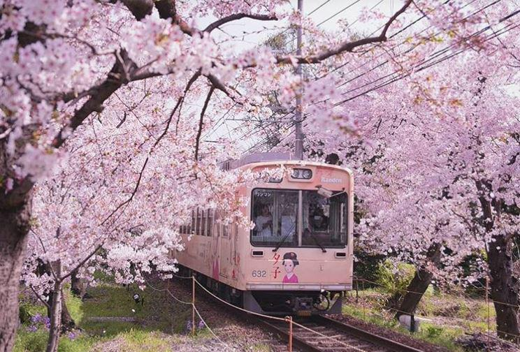
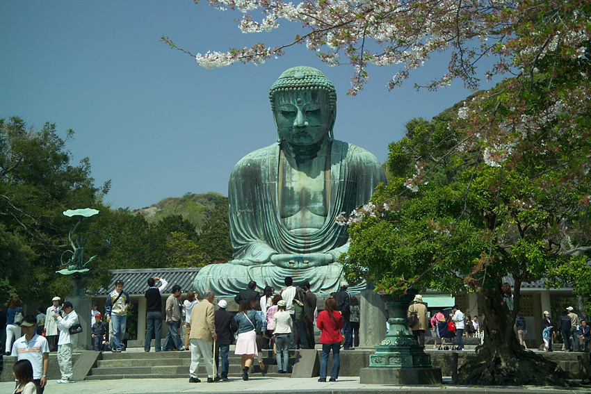

Японія
— острівна країна, розташована на східному узбережжі Азії, у північно-західній частині Тихого океану. Зі сходу і півдня її омиває Тихий океан, з заходу — води Японського та Східнокитайського морів, а з півночі — Охотське море. Японський архіпелаг простягнувся дугою з північного сходу на південний захід і налічує чотири великих острови Хоккайдо, Хонсю, Сікоку та Кюсю, які становлять 97 % поверхні суходолу і 6848 менших островів. Країна лежить у зоні помірного кліматичного поясу. Площа Японії становить 377 929,99 км². Більша частина Японських островів укрита горами, серед яких багато вулканів. Найвищий з них — гора Фудзі (3776 м над рівнем моря)..jpg) Результати археологічних досліджень доводять, що люди заселили Японський архіпелаг у добу пізнього палеоліту. Перші писемні згадки про Японію з'являються у китайських історичних хроніках 1 століття по Р. Х. В цілому, історія Японії демонструє динамічні зміни двох парадигм, за якими розвивалася країна — активні відносини із зовнішнім світом та ізоляція від нього. Такі зміни зумовили формування самобутньої японської культури.
Згідно з конституцією, Японія є унітарною конституційною монархією. Главою держави є імператор, але виконавча влада в країні зосереджена в руках прем'єр-міністра. Законодавча влада належить Парламенту, який є одним із найстарших демократичних інститутів Азії. Оскільки Японія була першою країною світу, яка пізнала жах ядерної війни, її нинішній уряд сприяє боротьбі за мир і руху роззброєння.
Японія є третьою за величиною економічною державою світу. Вона посідає 6-е місце за обсягами імпорту та експортутоварів і є членом «Великої сімки».
Результати археологічних досліджень доводять, що люди заселили Японський архіпелаг у добу пізнього палеоліту. Перші писемні згадки про Японію з'являються у китайських історичних хроніках 1 століття по Р. Х. В цілому, історія Японії демонструє динамічні зміни двох парадигм, за якими розвивалася країна — активні відносини із зовнішнім світом та ізоляція від нього. Такі зміни зумовили формування самобутньої японської культури.
Згідно з конституцією, Японія є унітарною конституційною монархією. Главою держави є імператор, але виконавча влада в країні зосереджена в руках прем'єр-міністра. Законодавча влада належить Парламенту, який є одним із найстарших демократичних інститутів Азії. Оскільки Японія була першою країною світу, яка пізнала жах ядерної війни, її нинішній уряд сприяє боротьбі за мир і руху роззброєння.
Японія є третьою за величиною економічною державою світу. Вона посідає 6-е місце за обсягами імпорту та експортутоварів і є членом «Великої сімки».Японія посідає 10-е місце у світі за чисельністю населення, яке становить близько 127 мільйонів осіб. Столиця країни, Токіо, нараховує понад 8 мільйонів мешканців (агломерація нараховує понад 30 мільйонів мешканців і є найбільшою у світі).
Назва:
У доісторичну епоху Японію називали Тойо-Ашіхара-Мідзухо-но-куні — «Багата країна очеретяних рівнин і водянистих рисових колосків» та Ашіхара-но-Накацу-куні — «Центральна країна очеретяних рівнин». Ці назви зустрічаються у стародавніх японських хроніках «Записи про справи давнини» та «Аннали Японії», найбільших зібраннях японських міфів та легенд. З 4 століття Японію називали Ямато, за назвою давньояпонської держави, яка контролювала більшу частину Японського архіпелагу. Ця держава мала дипломатичні відносини з Китаєм, де її зневажливо іменували Во — «край карликів». Під впливом сусідів стародавні японці вживали на письмі для позначення власної країни китайський ієрогліф «карлик», але читали його на свій лад — «Ямато».
 Близько 7 століття принизливу назву було змінено на нову, що вказувала на східне розташування Японії. Її записували трьома ієрогліфами — «Країна, де сходить сонце». У 8 столітті цей запис спростили на «Основа сонця». Початково обидва ієрогліфічні сполучення читали як «Ямато», проте згодом стали вимовляти на китайський лад — Ніппон. З 10 століття слово «Ніппон» перетворилося на основне, яким позначали Японію як усередині країни, так і за кордоном. У 13 столітті венеціанський мандрівник Марко Поло поширив у Європі китаїзований варіант японського слова «Ніппон» — Cipangu. У французькій, іспанській та португальській мовах воно трансформувалося у Japon та, за їх посередництва, потрапило до української мови, перетворившись на Японію.
З кінця 19 століття в Японії широко вживалося альтернативне прочитання слова «Ніппон» — Ніхон. У березні 1934 року, за ініціативи Міністерства культури Японії, японський уряд визнав таке прочитання помилковим, закріпивши за «Ніппон» офіційний статус. У чинній Конституції Японії від 1947 року формальною назвою країни визнано Ніппон-коку — «Японська держава». Попри це, слово «Ніхон» і далі вживається в Японії на офіційному і побутовому рівнях. 
Релігія:
Національні свята

| Дата | Українська назва | Японська назва |
|---|---|---|
| 1 січня | Перший день Нового року | 元日 ґандзіцу |
| Другий понеділок січня | День повноліття | 成人の日 сейдзін но хі |
| 11 лютого | День заснування держави | 建国記念の日 кенкоку кінен-но хі |
| Третя декада березня | День весняного рівнодення | 春分の日 сюмбун но хі |
| 29 квітня | День Сьова (День народження Хірохіто) | 昭和の日 сьова но хі |
| 3 травня | День Конституції | 憲法記念日 кемпо кіненбі |
| 4 травня | День сакури | みどりの日 мідорі но хі |
| 5 травня | День дітей | こどもの日 кодомо но хі |
| Третій понеділок липня | День моря | 海の日 умі но хі |
| Третій понеділок вересня | День шанування старших | 敬老の日 кейро но хі |
| Третя декада вересня | День осіннього рівнодення | 秋分の日 сюбун но хі |
| Другий понеділок жовтня | День фізкультури | 体育の日 тайїку но хі |
| 3 листопада | День культури | 文化の日 бунка но хі |
| 23 листопада | День подяки за працю | 勤労感謝の日 кінро канся но хі |
| 23 грудня | День народження чинного імператора | 天皇誕生日 тенно тандзьобі |